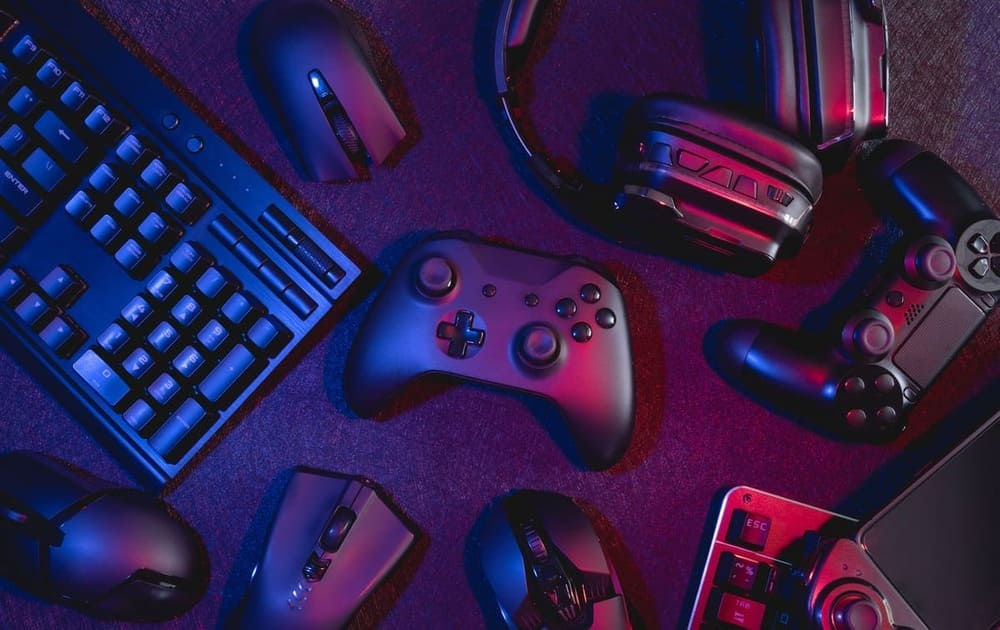

Mis Aficiones
El gimnasio se ha convertido en mi refugio, un lugar donde puedo desconectar del estrés diario y enfocarme en mi bienestar físico y mental. Cada sesión de entrenamiento es una oportunidad para superar mis límites y sentirme más fuerte y saludable. Ya sea levantando pesas, haciendo cardio o participando en clases de grupo, el gimnasio me brinda la energía y la confianza que necesito para enfrentar los desafíos de la vida cotidiana. Además, la sensación de logro después de un buen entrenamiento es incomparable, ¡y eso es lo que me motiva a seguir yendo al gimnasio día tras día!

Sumergirse en el mundo de los videojuegos es mi forma de escapar a mundos llenos de aventuras y emoción. Ya sea explorando vastos reinos en juegos de rol, compitiendo en emocionantes partidas multijugador o resolviendo intrigantes rompecabezas en juegos de aventuras, los videojuegos me permiten vivir experiencias únicas y emocionantes. Además, no solo son una forma de entretenimiento, sino que también fomentan la creatividad, la toma de decisiones estratégicas y la colaboración en equipo. Jugar a videojuegos es mi pasión, mi manera de relajarme y mi fuente de diversión inagotable. ¡No puedo esperar para compartir mis aventuras y descubrimientos en este apasionante mundo contigo!
